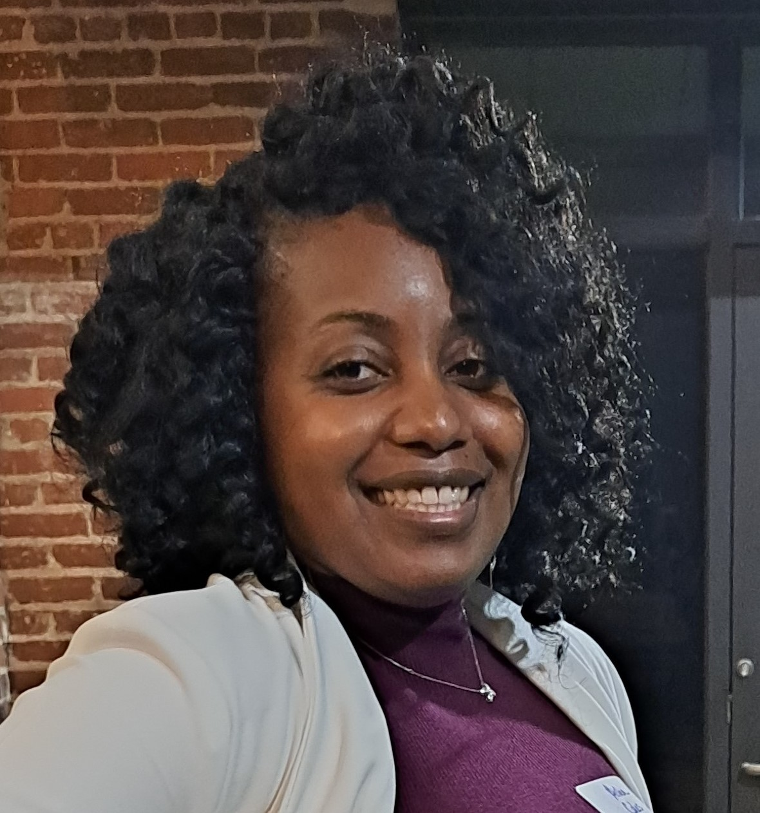

About Aisha
Aisha's personality can be described as friendly, hard-working, and intuitive. She is consistently praised for her work ethic, achieving high customer satisfaction, and creating systems for better workflow. She has worked across several different industries, as an office administrator, taking on every experience as a way to tackle new challenges and gain fresh perspective. She accumulates knowledge from personal and professional experiences in order to provide innovative solutions to problems and tailor those solutions to work for others around her. She loves being organized, very detailed and likes to have space for her creative juices to flow. Combining her skills, experience, and eye for design has led her to pursue a career in Full Stack Software Development.
Featured Project
Experience and Skills
Objective
I am an Entry-Level Full Stack Software Engineer ready to apply my artistic abilities, attention to detail, and clean code practices to create impactful software applications. Knowledge in coding languages HTML, CSS, and JavaScript along with libraries and frameworks such as React, Jest, Node, Express, and jQuery. Experience using coding tools such as Visual Studio, Github, Git, and ARIA. Equipped with 7+ years of work experience as an Office Administrator, I have the natural instinct for effective communication with a team, a willingness to learn and adapt to new situations, self-motivated and professional personality with customers. I seek to secure a challenging position in a reputable organization to expand my learnings, knowledge, and skills to make a positive impact and contribute to the organization's overall goals.
Work Experience
Operations Manager - Endless Home Fitness
(10/2020 - Present)
Operations Manager of startup exercise equipment rental company. Utilize my previous work experience and personal skills in customer service, business management, and accounting to create an effective business with a solid foundation, smooth workflow processes, and up-to-date marketing strategies.
Office Manager - Northwest Comfort Systems
(12/2019 - 09/2022)
Office Manager for a residential and light commercial HVAC company with a 50-mile operating radius. Employed critical thinking, organization, and time-management skills to increase company revenue, create new internal processes, improve inventory management, and build stronger business relationships with vendors, staff, and customers.
Skills/Languages
- HTML
- CSS
- JavaScript
- Git
- GitHub
- Node.js
- React
- SQL
- Database
- Data Security
Education
Full Stack Engineer Career Path Certification
11/2022 - 11/2023 | Codecademy Online Course
B.A. in Foreign Language (Spanish)
08/2009 - 05/2013 | Wesleyan College | Macon, GA
High School Diploma
09/2005 - 06/2009 | Foster High School | Tukwila, WA